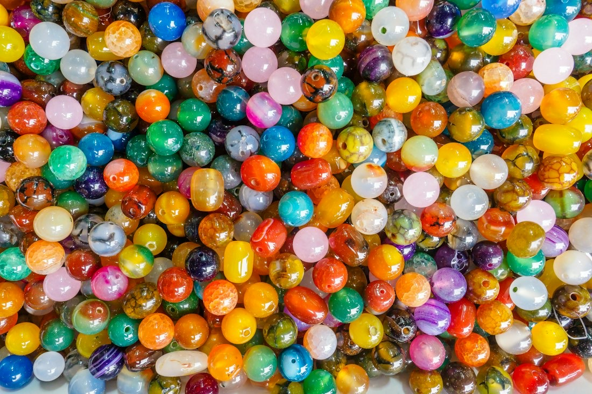
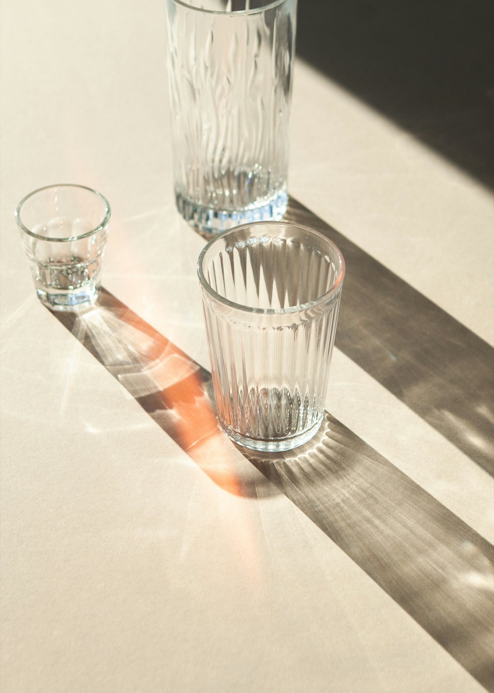
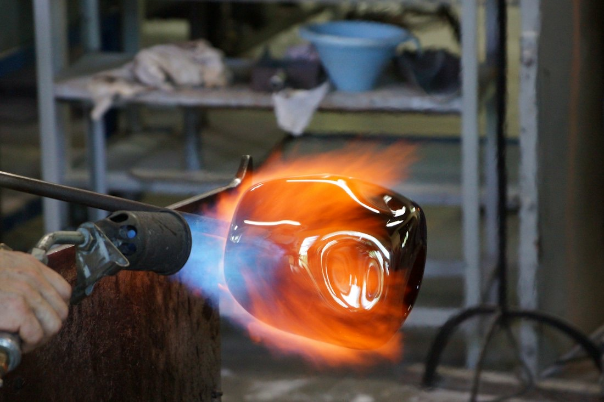
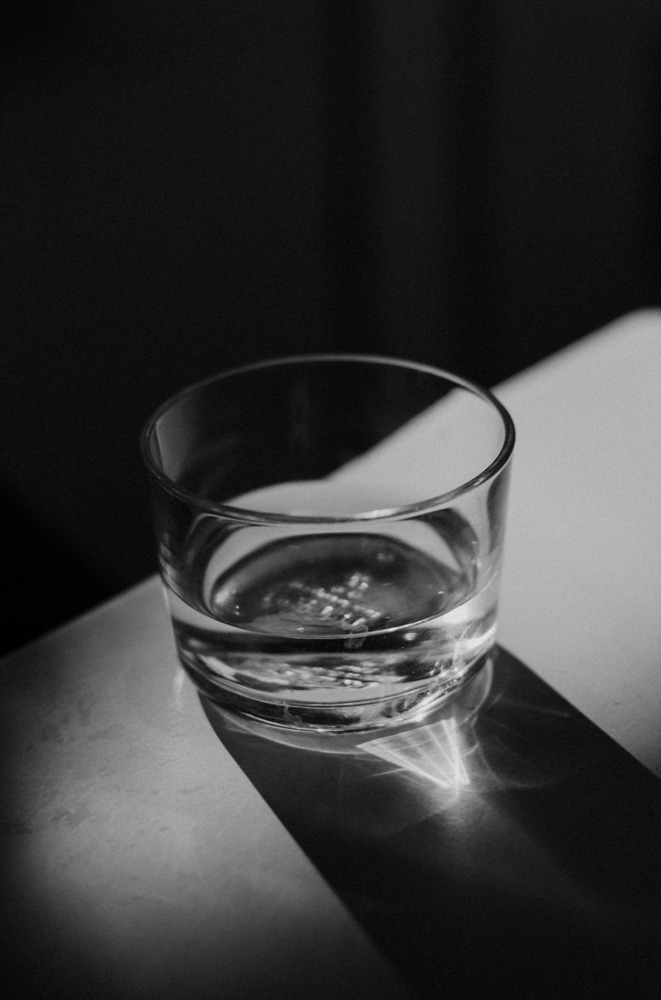
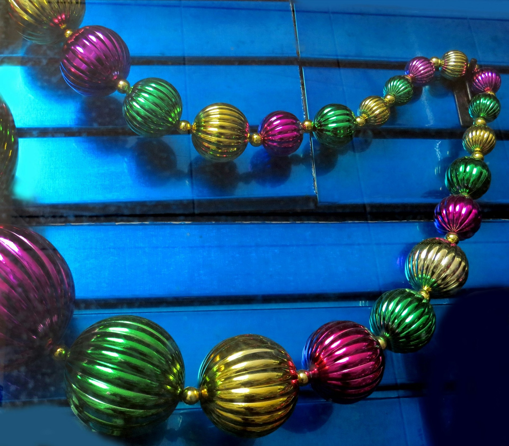

サンドブラスト体験
透明なグラスやお皿に、すりガラスの模様を付けます。

ガラス体験・ガラス細工 滋賀県近江八幡市
関西・滋賀で、ガラス細工の販売とガラス体験教室を開いています。ご家族連れ、お友達、子供会、学校関係の団体様にも対応しています。
グラスをなぞって、削ってみてください
サンドブラスト
体験
透明なグラスやお皿に、すりガラスの模様を付けます。
サンドブラストの3Dイメージです
サンドブラストは80名様程度、フォトフレーム・フュージングは30名様程度まで対応できます。団体のご相談もお気軽にどうぞ。
出張ガラス体験もしています。滋賀県内は全域お伺いします。

透明なグラスやお皿に、すりガラスの模様を付けます。

バーナーでガラス棒を溶かし、穴の空いたガラス玉を作ります。

工芸用ガラスを電気炉で溶着して、アクセサリーを作ります。

…
| 開館時間 | 10:00〜18:00（体験受付は16:00まで） |
|---|---|
| 定休日 | 水曜日（出張体験の際は臨時休業） |
日時・体験メニュー・人数・お名前・お電話番号をお知らせください。